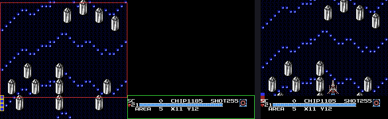
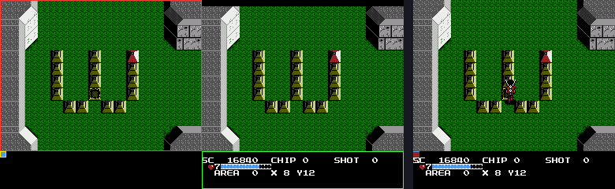
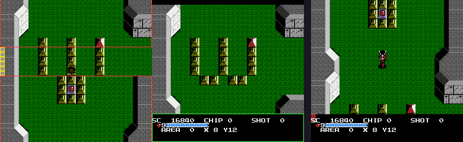
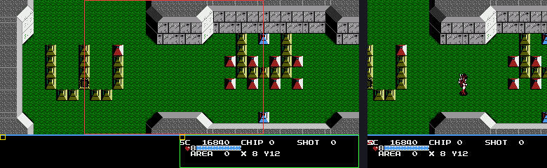
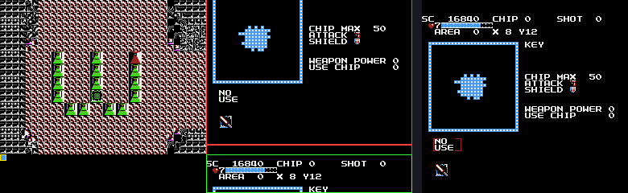

How the picture is made and how it scrolls: the cartridge's mirroring, what the NMI does every frame, the sprite-0 split that parks the HUD at the bottom of the screen, the corridors' vertical scroll and the labyrinth's room-to-room scroll.
iNES byte 6 is $21: bit 0 is 1, so vertical mirroring. Mapper 2 has no mirroring register, so this never changes. It means $2000 and $2800 are one table (NT0) and $2400 and $2C00 the other (NT1): two 32 × 30 tables side by side, each repeated below.
| PPU address | Table | How the game uses it |
|---|---|---|
| $2000-$23FF | NT0 | The playfield: the corridor (all of it), the labyrinth's room at rest, and one of the two rooms during a scroll. |
| $2400-$27FF | NT1 | The HUD in rows 24-29, always; the neighbouring room during a horizontal scroll; the status screen. |
| $2800-$2BFF | NT0 again | Written to, on purpose (see below). |
| $2C00-$2FFF | NT1 again | Never used. |
The game relies on it, in two ways (the note in rom.json said this was not checked):
$A8 counting 0–252 with the table bit $A9) run across the join between $2000 and $2400. With horizontal mirroring those would be one table over another and the scroll would wrap onto itself.$AB flips each time the row counter wraps ($E98F-area code, bank 7 $EACC/$E6B9), and while it is 1 the row address is moved up by $0800. With vertical mirroring $2800 is NT0, so the same 30 rows are simply reused. Counted on the NES model over 120 corridor frames: 768 PPU writes to $2000-$23FF, 216 to $2800-$2BFF, 62 to $2400-$27FF (the HUD); over the labyrinth's north scroll, 864 to $2800-$2BFF, and none there for the east scroll. The scroll code toggles the vertical table bit $A7 the same way, which is invisible for the same reason.The game never writes the PPU's scroll or control registers from game code. It keeps shadow values and one routine copies them at the end of every NMI. Bank 7 $DC75, in order:
$FE &= $E7 then $2001.$2B), read $2002 into $26, sprite DMA from $0200.$4015 = $1F: starts the DMC timer that will raise the split's IRQ (below).$DD54: the PPU writes — first one pending background row (the scroll engine's, below), then the generic queue at $0100 (a run of tiles, increment 1 or 32, or an attribute edit); and $DEC9: the palette shadow $0180 to $3F00/$3F10 when $017F is non-zero.$30 bit 4 is set (a scrolling stage), write tile $FE into column 0 of the row under scanline 192 — the split's target (below).$D68B: $2000 = $FF, $2005 = $FD (horizontal), $2005 = $FC (vertical).$FE = ($FE & $E7) | $A3 — $A3 is 0 while the screen is blanked (fades, loading) and $18 otherwise.$8009), then the random state is stirred.| Shadow | Meaning |
|---|---|
| $FF | PPUCTRL. In play it is $B0/$B1: NMI on, 8 × 16 sprites, background and sprites from the second and first pattern table respectively (sprite 0's tile $FF in an 8 × 16 sprite is read from the table its low bit selects, the second); bits 0-1 are the nametable, forced each NMI to $A2. |
| $A2 | Nametable select = $A7 (vertical bit) × 2 + $A9 (horizontal bit), built by $D507. |
| $A6 $A7 | The vertical scroll the game wants, 0-239, and its table bit. $FC is $A6 as copied for the NMI. |
| $A8 $A9 | The horizontal scroll and its table bit; $FD is its copy. |
| $FE $A3 | PPUMASK and the part of it that says rendering is on. |
The status bar is part of the same frame, not a separate layer. The frame is 192 scan lines of playfield and 48 lines of HUD.
$D51E to y = $BF (191), tile $FF, attributes $20 (behind the background), x = 0. With 8 × 16 sprites that is tiles $FE and $FF of the second pattern table; $FE's high plane is all ones, so it is a solid block. It sits in scan lines 192 and down.$FE in column 0 at scan line 192. In the labyrinth that tile is part of the room: the blank row written after the 12 room rows (bank 7 $F03D, $16 = $C0) starts with $FE, row 24 of the table. In a corridor the picture scrolls, so the NMI rewrites the marker every frame at the row that is under line 192 for the current $FC ($DCA2-$DCD2); the ones it leaves behind scroll away out of sight below the window.$2002 bit 6, at line 192, because the top half of the sprite is solid), bank 7 $DD21 runs: $2006 ← $27, $00 (the PPU address becomes nametable 1, tile row 24, column 0, fine y 2, immediately), $2000 ← $FF with the nametable bits forced to 1, $2001 with the sprite bit cleared, and $2005 ← 0, 0 (which also clears fine x). The rest of the frame is NT1 from row 24: the HUD, unscrolled, with no sprites. The next NMI puts everything back.Two routines can, and either may: the main thread waits for the hit in its frame-sync routine ($DA9A, the BIT $2002 / BVC loop at $DAB6) and calls $DD21; and the DMC interrupt (IRQ vector $DCF3) does it from the middle of the game logic. The IRQ exists because the main thread is usually busy, and this board has no scanline counter. The DMC channel is only a timer: bank 6 $802A loads a 17-byte all-zero sample ($4012 = $FF → $FFC0, $4013 = 1, $4010 with the IRQ bit set), and the NMI restarts it each frame ($4015 = $1F). It ends after 17 × 8 = 136 sample periods, and the IRQ handler acknowledges it ($4015 = $0F), spins on $2002 until the hit (giving up if the frame counter moves) and runs $DD21.
Tuning. The rate index in $05 (low nibble of $4010) is walked up one step whenever the IRQ turns out to be late (the hit has already happened, $DD15) and capped at $89. The periods below are the NTSC DMC table, which is outside knowledge, not in the ROM; the frame starts 2,273 cycles of vblank before line 0 and the hit is at line 192.
| $4010 (low nibble) | Period (CPU cycles) | IRQ after the NMI | Scan line | |
|---|---|---|---|---|
| $87 | 214 | 29,104 | 236 | after the hit: late |
| $88 | 190 | 25,840 | 207 | after the hit: late |
| $89 | 160 | 21,760 | 171 | before the hit: the IRQ waits for it |
So it starts at $87 (set by $EDE8, late), is walked to $89 and stays: the IRQ arrives about 21 lines early and waits. That is the arithmetic of the table, not a run: the NES model delivers no IRQ, so in every run here the main-thread path did the split.
A corridor does not scroll sideways ($A8 stayed 0 in the run; a stage is 16 metatiles = 256 pixels wide). Its picture lives only in NT0: 30 tile rows = 15 metatile rows = 240 lines, of which 192 show.
$B8/$B9 is the speed in 1/256 pixel a frame ($0180 = 1.5 in the run), moved 2/256 a frame toward the target $BA/$BB that the stage's commands set. Bank 7 $E530 subtracts it from $B6/$A6: $A6 counts down, so the picture moves down the screen and new rows appear at the top; when it passes 0 it wraps to 239 (sbc #$0F on the borrow) and $A7 toggles.$AF adds the pixels moved; at 16 ($E69B) the next row is built ($E8AB: 16 metatile ids, then bank 5 $83B3 turns them into 32 + 32 tiles and 8 attribute bytes in $0130, $0150 and $04E8) and the row counter $B0/$B1 (the stage clock) goes up. $AE counts the 15 rows down, 14 to 0 and round again; $EACC turns it into the PPU address $2000 + $40 × $AE in $AC/$AD (plus $0800 while $AB is 1) and the attribute address in $AA.$A5 is the hand-off: 1 makes the next NMI write the attribute bytes and the first tile row, 2 makes the one after write the second tile row ($DD54). Ground objects created from the row take its PPU address with them (bank 5 $8A42: $AC/$AD into the object's own $05C0/$05D8), which is how a cannon patches its own background tiles later.$A6) mod 240) / 8.
A room is 16 × 12 metatiles = 256 × 192, exactly the playfield, so at rest $A6, $A8, $A7 and $A9 are all 0 and the room is in NT0 rows 0-23. Bank 7 $F03D draws it a row at a time (two tile rows a frame, 13 frames), then one blank row with the marker. Everything that edits the room later (the blocks shots break, Shooting the room) writes to NT0 at the room's own position, so the room has to be in NT0 when it stops.
Moving to a neighbouring room is a scroll of exactly one screen ($A4 is the exit: 0 north, 2 west, 6 east, 8 south; $F09A chooses the routine). Measured on the NES model from the savestate, with the real game code running:
| Exit | Scroll | Steps | The new room is drawn into |
|---|---|---|---|
East ($F0C2) | $A8 0 → 252, +4 a frame; table bit $A9 0, the window moving from NT0 into NT1 | 64 frames | NT1, rows 0-24, two rows a frame in the 13 frames before the scroll starts |
West ($F0E8) | $A8 252 → 0, −4 a frame, with $A9 = 1: the window starts on NT1's right edge (4 pixels of NT1, the rest wrapped round to NT0) and moves left across it | 64 frames | NT1 again, 13 frames before the scroll |
North ($F169) | $A6 236 → 48 (counting down, −4), $A7 1 | 48 frames | NT0, into the rows the window is about to uncover: rows 29, 28, … 6, a metatile row (two tile rows) every 16 pixels, wrapping at the top of the table |
South ($F10D) | $A6 0 → 192 (counting up, +4) | 48 frames | NT0, rows 24-29 and then 0-17, wrapping at the bottom |
During all four the ship is moved 3 pixels a frame against the scroll's 4 (bank 7 $F0C2 and its vertical twin), so it crosses to the opposite edge of the new room as the room slides in (east: ship x 242 → 18; west: 16 → 237).
When the scroll ends the new room is on screen but not where later code expects it, so it is re-homed without a visible jump, with the display switched between identical pictures. After an east or west scroll the new room is the whole of NT1 ($A9 = 1, $A8 = 0), so it is simply copied into NT0 (13 frames, hidden) and $A9 goes back to 0. After a north or south scroll the new room straddles the wrap of NT0, so it is first drawn whole into NT1 (13 frames), the display flips to NT1 at scroll (0, 0), it is drawn whole into NT0, and the display flips back. Run on the model, east exit: NT1 filled up to frame 32, the scroll 33-95, at 96 $A8 wraps to 0 and $A9 = 1, NT0 filled 97-109, $A9 = 0 at 112. West: NT1 filled to frame 27, scroll 28-94, NT0 filled 95-106, $A9 = 0 at 107. North: scroll to frame 73, NT1 filled 75-85, $A9 = 1 at 87, NT0 filled 88-100. South: the same shape. Then the cell map is rebuilt ($8006) and the ship placed ($F269).



Select opens it (bank 7 $E4EE; bank 5 $84CB). It needs no split: it sets $A2 = 1 and $FC = $B4 (180) and draws its map, icons and text into NT1. Scrolling NT1 down by 180 lines puts its last 7.5 rows — the HUD — at the top of the screen and rows 0-17 below, so the HUD stays visible over the new screen with nothing to switch. Sprite 0 is not used ($30 bit 4 is clear). The room is in NT0 the whole time, untouched.

tools/tgl/cpu.py) from the owner's corridor and labyrinth savestates, and the pictures from tools/render-scroll.py. Not established: any of it on hardware; the IRQ path (the model delivers no IRQ, and the DMC period table is outside knowledge); the exact scan line the split lands on within the hit line (the HUD begins on a blank row, so it does not matter on screen); what the vertical re-homing draws in NT1 first; what the inline PPU fills at $F0A8-$F0C1 do in the horizontal scroll; and the other scrolling screens (the title, the ending, the password screen) were not looked at.